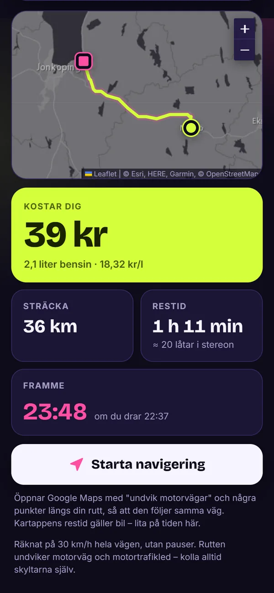
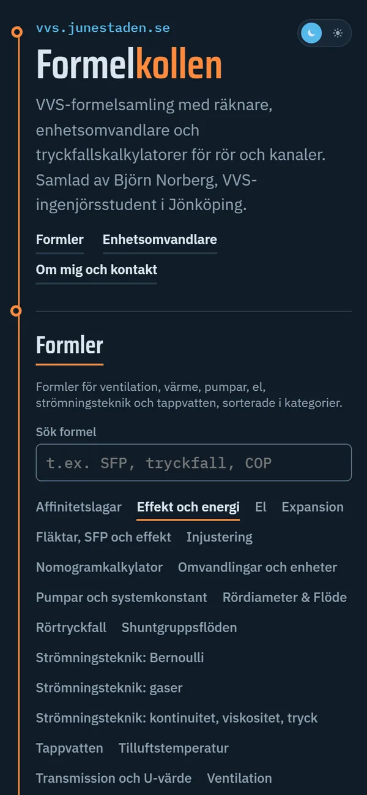
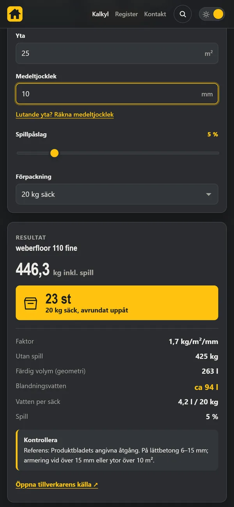

Projekt
Webbverktyg för bygg och vardag.
Jag heter Björn Norberg och studerar till VVS-ingenjör i Jönköping. Här samlar jag verktygen jag har byggt. Alla är gratis, kräver ingen inloggning och fungerar lika bra i mobilen som på datorn.


